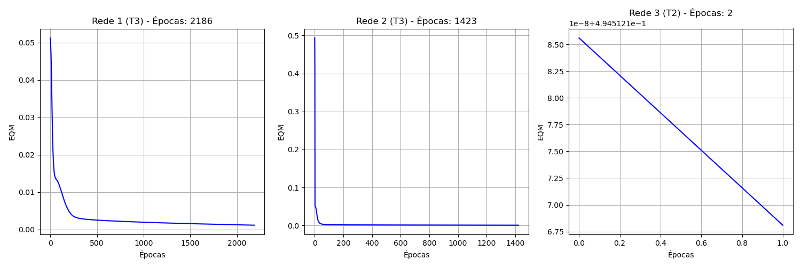
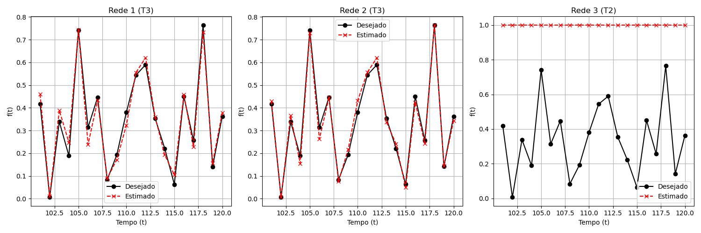

Trabalho - Perceptron Multicamadas (Backpropagation) - PMC3
2. Registre os resultados finais desses 3 treinamentos para cada uma das três topologias de rede na tabela a seguir:
| Treinamento |
Rede 1 |
Rede 2 |
Rede 3 |
|
EQM |
Épocas |
EQM |
Épocas |
EQM |
Épocas |
| 1º (T1) | 0.000927 | 2493 | 0.000543 | 1494 | 0.494518 | 2 |
| 2º (T2) | 0.001550 | 1535 | 0.000873 | 1153 | 0.494512 | 2 |
| 3º (T3) | 0.001139 | 2186 | 0.000741 | 1423 | 0.494514 | 2 |
3. Faça a validação da rede em relação aos valores desejados apresentados na tabela abaixo.
|
|
Rede 1 |
Rede 2 |
Rede 3 |
| Amostra |
f(t) |
(T1) | (T2) | (T3) |
(T1) | (T2) | (T3) |
(T1) | (T2) | (T3) |
| t = 101 | 0.4173 | 0.4634 | 0.4617 | 0.4593 | 0.4233 | 0.4228 | 0.4290 | 1.0000 | 1.0000 | 1.0000 |
| t = 102 | 0.0062 | 0.0141 | 0.0191 | 0.0105 | 0.0041 | 0.0064 | 0.0062 | 1.0000 | 1.0000 | 1.0000 |
| t = 103 | 0.3387 | 0.3803 | 0.3759 | 0.3887 | 0.3575 | 0.3834 | 0.3658 | 1.0000 | 1.0000 | 1.0000 |
| t = 104 | 0.1886 | 0.2384 | 0.2611 | 0.2477 | 0.1525 | 0.1491 | 0.1548 | 1.0000 | 1.0000 | 1.0000 |
| t = 105 | 0.7418 | 0.7359 | 0.7067 | 0.7426 | 0.7237 | 0.7381 | 0.7299 | 1.0000 | 1.0000 | 1.0000 |
| t = 106 | 0.3138 | 0.2489 | 0.2120 | 0.2384 | 0.2883 | 0.2586 | 0.2626 | 1.0000 | 1.0000 | 1.0000 |
| t = 107 | 0.4466 | 0.4260 | 0.4144 | 0.4327 | 0.4362 | 0.4423 | 0.4448 | 1.0000 | 1.0000 | 1.0000 |
| t = 108 | 0.0835 | 0.0759 | 0.0780 | 0.0891 | 0.0879 | 0.0795 | 0.0762 | 1.0000 | 1.0000 | 1.0000 |
| t = 109 | 0.1930 | 0.1847 | 0.2142 | 0.1716 | 0.2239 | 0.2228 | 0.2168 | 1.0000 | 1.0000 | 1.0000 |
| t = 110 | 0.3807 | 0.3323 | 0.3072 | 0.3236 | 0.4328 | 0.4688 | 0.4318 | 1.0000 | 1.0000 | 1.0000 |
| t = 111 | 0.5438 | 0.5602 | 0.5599 | 0.5554 | 0.5540 | 0.5499 | 0.5561 | 1.0000 | 1.0000 | 1.0000 |
| t = 112 | 0.5897 | 0.6159 | 0.6204 | 0.6206 | 0.5900 | 0.6144 | 0.6200 | 1.0000 | 1.0000 | 1.0000 |
| t = 113 | 0.3536 | 0.3563 | 0.3752 | 0.3597 | 0.3484 | 0.3425 | 0.3372 | 1.0000 | 1.0000 | 1.0000 |
| t = 114 | 0.2210 | 0.2052 | 0.2103 | 0.1927 | 0.2197 | 0.2408 | 0.2409 | 1.0000 | 1.0000 | 1.0000 |
| t = 115 | 0.0631 | 0.0924 | 0.1137 | 0.1042 | 0.0456 | 0.0430 | 0.0490 | 1.0000 | 1.0000 | 1.0000 |
| t = 116 | 0.4499 | 0.4667 | 0.4436 | 0.4580 | 0.4349 | 0.4159 | 0.4235 | 1.0000 | 1.0000 | 1.0000 |
| t = 117 | 0.2564 | 0.2248 | 0.2337 | 0.2293 | 0.2355 | 0.2449 | 0.2417 | 1.0000 | 1.0000 | 1.0000 |
| t = 118 | 0.7642 | 0.7323 | 0.7680 | 0.7321 | 0.7729 | 0.7569 | 0.7630 | 1.0000 | 1.0000 | 1.0000 |
| t = 119 | 0.1411 | 0.1554 | 0.1454 | 0.1563 | 0.1397 | 0.1527 | 0.1434 | 1.0000 | 1.0000 | 1.0000 |
| t = 120 | 0.3626 | 0.3748 | 0.3284 | 0.3780 | 0.3559 | 0.3512 | 0.3428 | 1.0000 | 1.0000 | 1.0000 |
| Erro Relativo Médio: | | 16.28% | 23.61% | 15.22% | 7.74% | 8.76% | 7.22% | 1112.56% | 1112.55% | 1112.55% |
| Variância: | | 766.71% | 2116.54% | 359.05% | 87.05% | 73.83% | 38.07% | 11838140.99% | 11838043.49% | 11838078.89% |
4. Trace o gráfico dos valores de erro quadrático médio (EQM) em função de cada época de treinamento para o melhor de cada rede.
Abaixo estão os gráficos do EQM para a melhor execução (menor Erro Relativo no Teste) de cada uma das três topologias:

5. Trace o gráfico dos valores desejados e dos valores estimados pela respectiva rede em função do domínio de estimação.
Abaixo estão os gráficos comparando o valor desejado f(t) e o valor estimado y(t) para o conjunto de testes (t=101..120) para o melhor treinamento de cada topologia:

6. Indique qual das topologias candidatas e configuração final seria a mais adequada para previsão.
Baseado nas análises das tabelas e gráficos, a topologia mais adequada é a Rede 2 utilizando a configuração de treinamento T3. Esta combinação apresentou o menor Erro Relativo Médio (7.22%) sobre o conjunto de dados de teste (dados não vistos durante o treinamento), demonstrando a melhor capacidade de generalização e aderência aos dados temporais futuros (t=101 a 120).
7. Investigue e comente sobre as principais características e vantagens dos seguintes algoritmos de treinamento:
a. Algoritmo de treinamento Resilient-Propagation (RProp)
O RProp (Resilient Backpropagation) é um algoritmo de aprendizado heurístico cuja principal característica é utilizar apenas o sinal (direção) do gradiente de erro para atualizar os pesos, ignorando a magnitude (valor absoluto) do gradiente. Para cada peso, ele mantém um fator de atualização individual. Se o gradiente mantiver o mesmo sinal por duas épocas seguidas, o tamanho do passo aumenta (aceleração); se o sinal inverter (indicando que o mínimo foi ultrapassado), o tamanho do passo diminui.
Vantagens: É extremamente rápido e robusto. Resolve problemas clássicos do gradiente descendente convencional, como a estagnação em regiões de platô (onde o gradiente é muito pequeno), permitindo uma convergência muito mais rápida. Não requer ajuste manual criterioso da taxa de aprendizagem para cada problema.
b. Algoritmo de treinamento Levenberg-Marquardt (LM)
O algoritmo de Levenberg-Marquardt é uma técnica de otimização numérica que combina a velocidade do método de Newton (ou Gauss-Newton) com a estabilidade do método do Gradiente Descendente. Ele utiliza a matriz Jacobiana (derivadas dos erros em relação aos pesos) para aproximar a matriz Hessiana. Quando o algoritmo está longe do mínimo, ele se comporta como o gradiente descendente (passos pequenos e seguros); quando se aproxima do mínimo, ele transiciona para o método de Gauss-Newton, garantindo uma convergência quadrática e extremamente rápida.
Vantagens: É considerado um dos algoritmos de treinamento mais rápidos disponíveis para redes neurais de tamanho moderado. Apresenta excelente taxa de convergência e costuma encontrar erros muito menores que o backpropagation padrão em consideravelmente menos épocas. A principal desvantagem é o alto custo computacional por época e o grande consumo de memória, pois exige o cálculo e armazenamento da matriz Jacobiana, tornando-o inadequado para redes gigantescas.